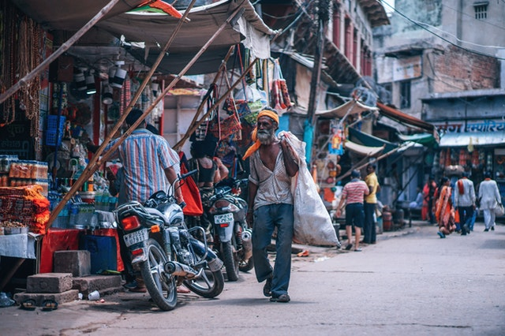
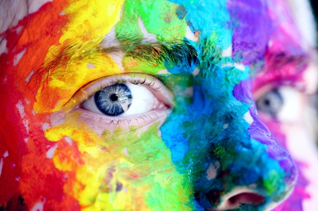

This website has been created just to compare and share my opinions about how the different
variables in the course of life affects the human being happiness. It's just my opinion and analysis against some
other opinions, studies, and some other related facts. It is not to claim any definitive answer of how to be happy,
neither to make a list of happiness factors but just to try to show some of my personal research about this topic
Johan Farfan
About Me
Johan Farfan,
Social Interactions
Do all of them count to our general well living?
After This may not surprise many, but how much does social relationships affects our happiness?
It seems to be as simple as to interact with other people is a basic need, some people would omit this because they think after
having food, shelter and security everything else is complementary, but seems to be linked to the fact that we are one of those species
whom socialize to survive, like a need our brain kept from evolution or just a designment from God.
It is actually so important, that if we fail to fulfil this need our health can be affected, but, why?
Not digging too deep in the scientific reasons, the lack of these interactions brings us un-happiness, which goes beyond mental problems
but it also comes along with physical problems like a shorter life, some brain functions that even involve something as basic as
memorization are affected, and in conclusion a more miserable life.
Contradictions and Curious Facts
It is always said that married individuals tend to be happier than the single ones, not too difficult to believe, and even more when there
some studies supporting family as a contributor element for happiness. Well, it isn't always the case. Bella De Paulo (a psychologist, of
course) claims that a single person have more social connections, and a better relationship with family, plus singles have more "psychologic
growth".
Another form of interaction that helps to obtain some happiness like benefits is taking care of pets. This fact is not surprising in the US
where pets are actually "prescribed" as a form to combat psychological problems. They help with anxiety and give their owners a sense of being
needed. So, for someone that is lacking of some good old regular human interaction pets also help for a good life in some way.
It's worth to mention that the boom of the social not so social media in this century is something that people have been using as a new way to
interact with their beloved ones, friends, family, and even strangers sometimes, are welcome in public or "private" profiles. The main promise
is beautiful, you can keep in touch with everyone, they will know what you're doing, anytime if you want to. Ironically social media ended up
becoming one of the main source of un-happiness mostly in young population. The biggest reasons, people is living tense life trying to look
happy, look interesting, and feeling bad about other people's happiness and interesting lives, in consequence, and as a second reason, virtual
networking can't replace real life interactions.
Robert Waldinger talks about The Good Life in TedTalk
There have been many studies and psychologist, supporting one side of this reality over the other one in happiness terms.
It's not simple and several conditions and factors affects the 'Good Life' of the rich and the poor.
So is one social group happier than the other one? The first thing that usually comes in mind is that being rich or
having a considerable wealth is happiness itself, right?
Photo by bruce mars from Pexels
After all, most of the problems of the day to day living would be solved,
capital could be the magic solution. But one question makes us going a bit deeper into this, are all the rich happy? Becasue it seems
to be the case that many of them have a somewhat miserable life, or some of them seems to be living the perfect life, and then they
just suddenly take away their own life, have family problems or even having all they need they still feel empty or anxious.
So what if the need more? For some, a race to patch whatever they lack starts right after they, having no explanation look for some other
material stuff to acquire, or more money to to pile up. So ok, something else is needed to live the 'Good life' huh? does that means that
being poor and having all the other non material needs covered people can be happier? Once again the answer is not simple.
How can you reach that happiness you want if you can barely survive with what you have? or, is the challenge of not having much to
exist the thing that gives us more reason to strive and look for what we want? but then again what if there are no chances of
economic improvement? would that make impossible to reach the Good Life, whatever that is?
Extreme poverty is definitely something different than just being poor, usually extreme poverty exist in certain countries and
conditions may vary within them, for non rich people there's always a way to get their basic needs and material stuff, it doesn't
mean they all want to be rich neither means they need to.

Photo by Fancycrave.com from Pexels
For the ones that dream with being wealthy, the more unreachable their options are it might get frustrating, if that's their main
focus. Having the chances can also be frustrating as well. There's an article by Erick W. Dollan, and although the study isn't
convincing (the object of study were 4.000 millionaires..), it states a very important condition, the most happiest ones were the ones
whom actually earn it!
Another article from the psychologist Nick Hobson in Psychology Today, states something similar, they both coincide in
the factor/condition of earning. It's something related to how people lives their lives then? Not the resources but how you keep them,
how you got them.
Is it all about balance?
My humble opinion regarding the wealthfare and the Good Living is; regardless the condition of being wealthy or not wealthy, in both
cases (of course) there are factors that have the power to take the meaning away from life, not all the meaning, but it's something
strong enough to affect the general happiness.
Religion have been previously studied from different angles by the scientific community regarding the effects that it has in our
behavior. Although lot of questions have been answered, it isn't an easy study and new questions and interpretations always come out.
Side note: I'd like to clarify that I won't try to make this section a rhetoric article about religion, neither to convince anyone about
my believes, nor convince anyone to not believe. As anyone else, I guess I have my own opinions about each religion and religions
and faith in general, but this sub article is just to objectively -as much as I can, compare happiness levels on previous studies
about religion and related data.
The most obvious question is, are religious people happier than non religious? Well, to start, most of the world's population believes in some
religion or have certain faith, it's a still astonishing 84%. If that percentage of believers is increasing or decreasing that's something debatable
it doesn't affect the purpose of this analysis, but every certain years there's a new religion to add on to the lot.
It's an important data, it means that even religions have been evolving, why?
For some researchers, they have to constantly adapt to avoid loosing followers. If they are right, the first thing I can think about is that they are
becoming more flexible, giving more freedom, less punishable sins, something easier to follow.
What about the other ones that have remained the same? Are their believers happier? or just happy in general?
According to an article by Kayonda Hubert Ngamaba in conversation.com, it depends on the group;
Our findings suggest that Protestants, Buddhists and Roman Catholics are happier and more satisfied with their lives, compared with other
groups. Jews, Hindus, Muslims, and the non-religious were in between, while Orthodox Christians were found to have the lowest happiness and life
satisfaction rates.
Something that many researchers seems to ignore is how devoted people are, many people confess to have a faith but the involvement and compromise levels vary,
and there has to be a notorious difference on it.
Religious Women vs Religious Men
One thing almost every religion, if not all of them treat different is gender, usually there's a role and some other involvements for men and women. As an example,
anyone knows that men have it easier in the path of "God" for Abrahamic based religions, where as women, are mostly looked as the origin of sin, or the ones who have
to cover themselves for whatever different reason they have in each religion. So, it's natural to ask, are women as happy as their counterpart in religions?
Sadly, I can't close this case with an affirmation, as I could not find any study with enough data, the ones existing were limited to just one religion and one country.
Yet, there's always some good information you can take from them. According to a study of Jong Hyun Jung, korean women are more likely to follow religious control and
rely more on the social network and attendance from the church, where as men seems to be more independent from this.
Facts about religion around the world
Yes, there are some studies that support religion as a contributor of happiness, coming from countries like the US where the majority of the population is religious.
The easiest explanation is that it contributes to fight depression, why? The reasonable relationship that I can see from this conclusion is that it helps people to socialize,
keeps family members together, etc, the main benefits of socialization. So, one point for religion.
When you think abut the happiest countries on earth, in the northern Europe, religion is not one of the main factors of happiness.. because they are the most atheist countries in
the world. They seem to have the "right optimized culture" and standards of living to live the good life, but it doesn't exactly means that religion can or can't contribute, they
probably just don't need another factor to contribute with their happy life.
A short analysis from the YouTube channel, Science Plus
A concept that many would not understand, at least until they get educated about it is the relationship between happiness
and Identity. Even if you're one of the ones that get an idea of how it is, then, knowing how you are equals being happy?
Identity is so wide sometimes we ignore all the things that are involved around it and it's behavioral effects. I think it'd
be worth to mention, nowadays it's even more complex than it used to be, due to the current opinions even on the scientific community about
sexual identity, why to cite this topic? because identity is just a conglomerate of everything we are, sexuality, religiosity, morally,
racially, culturally etc.
Racial and Cultural Identity
Why is racial identity something that gave people certain feeling of happiness, how is this a trustable fact? This one is a complex one for me,
but according to psychology, belongingness is something good for our mental sanity, it's part of a sense of realization, and realization is
to happiness.
Does it work the same with the sense of nationality? Probably, I must say this is an affirmation from my observations of immigrant workers,
especially blue collar workers. Even when they feel excluded there's still some sense of proud wearing their flags, listening to their music,
which if you come to think, it can be an isolating behavior considering that they're living in another country, but still there are smiles,
and the only thing I can think about is memories, memories linked to a national identity bringing some good old times to them.
Sexual and Religious Identity

Photo by Sharon McCutcheon from Pexels
Harmony; are we living our lives as our real selves?
Curious fact, lie detectors works capturing the uncomformity our brains reflects whenever a person lies, in body language, such brain unconformity
are also manifested, usually in changes in tone or when people hide their hands or have to touch, hide, any part of their faces. With that said, can
you imagine how uncomfortable our psyche is being someone we are not? living the never ending lie?
In almost every ancient civilization, the ones that started to make philosophic statements about the Good Living, Greeks, Hebrews, Analects, they talked
in their own ways about being correct, honest, how to live your life in harmony so that we can feel good with ourselves. There's an issue with all
of those ideologies, certainly some of their statements are true, but the problem is that everything you have to do, how you do it, is stated, in a very
closed way, then, how can you feel good with yourself following teachings that goes against who you are?
Returning to the controversial case of sexual identity, when you compare it to religious or strict cultural patrons something always goes odd. This isn't
something new, people might have been living in contradiction over centuries, trying to live as they "should", trying to fit, trying to be moral, or just
hiding their real selves to their own privacy. This is not only a sexual identity issue, but it's easier to see it in these kind of cases.